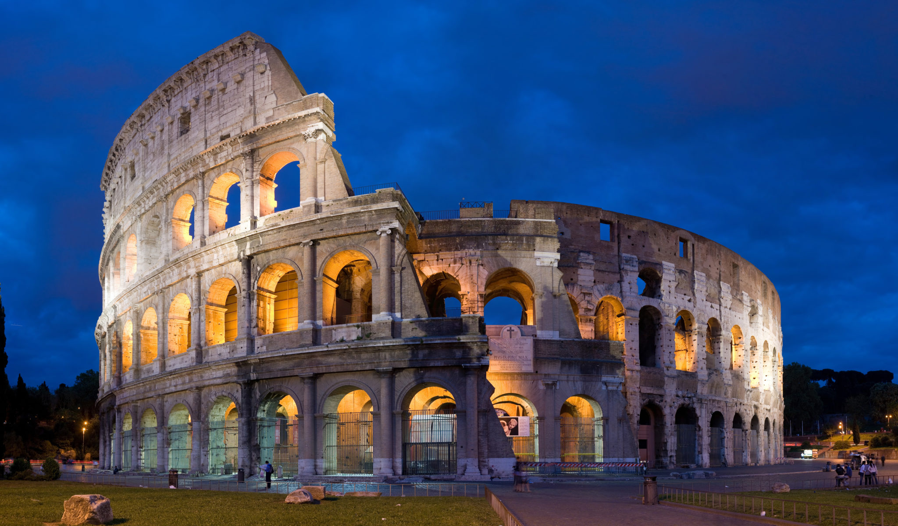

Centro histórico de Roma:

Localização: Roma/Itália
Ano de inscrição: 1980
Conceito:
O patrimônio inclui uma série de testemunhos de valor artístico incomparável, produzidos ao longo de quase três milênios de história: monumentos da antiguidade (como o Coliseu, o Panteão, o complexo dos Fóruns Romano e Imperial), fortificações construídas ao longo dos séculos (como as muralhas da cidade e o Castelo de Santo Ângelo), desenvolvimentos urbanos dos períodos renascentista e barroco até os tempos modernos (como a Piazza Navona e o “Tridente” demarcado por Sisto V (1585-1590), incluindo a Piazza del Popolo e a Piazza di Spagna), edifícios civis e religiosos, com suntuosas decorações pictóricas, em mosaico e esculturais (como o Monte Capitolino e os Palácios Farnese e Quirinale, o Ara Pacis , as Basílicas Maiores de São João de Latrão, Santa Maria Maior e São Paulo Fora dos Muros), todos criados por alguns dos artistas mais renomados de todos os tempos.
História:
Fundada às margens do rio Tibre em 753 a.C., segundo a lenda, por Rômulo e Remo, Roma foi primeiro o centro da República Romana, depois do Império Romano e, no século IV, tornou-se a capital do mundo cristão. A Roma Antiga foi sucedida, a partir do século IV, pela Roma cristã. A cidade cristã foi construída sobre a cidade antiga, reutilizando espaços, edifícios e materiais. A partir do século XV, os Papas promoveram uma profunda renovação da cidade e de sua imagem, refletindo o espírito do classicismo renascentista e, posteriormente, do Barroco. Desde a sua fundação, Roma tem estado continuamente ligada à história da humanidade. Como capital de um império que dominou o mundo mediterrâneo durante muitos séculos, Roma tornou-se, posteriormente, a capital espiritual do mundo cristão.